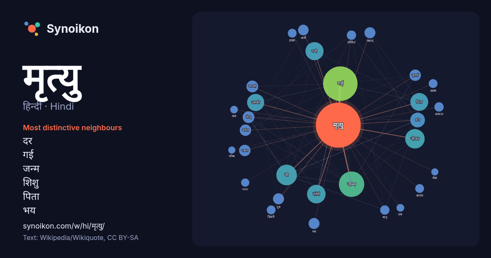

हिन्दी · Hindi · popular word
मृत्यु
“death” · The words found around it in 1065 instances from Hindi Wikipedia, Wikiquote.

Most distinctive neighbours
- दर 26×
- गई 20×
- जन्म 16×
- शिशु 14×
- पिता 14×
- भय 12×
- गयी 12×
- जीवन 12×
- पश्चात 11×
- पश्चात् 11×
- मातृ 10×
- उसकी 9.9×
- अकाल 9.8×
- हिजरी 9.6×
- अली 9.4×
- उपरांत 8.7×
- अप्रैल 8.5×
- जुलाई 8.4×
- लोगों 8.3×
- जनवरी 8.3×
× = how many times more often than in general Hindi Wikipedia text.
Most frequent neighbours
- गई 138
- जन्म 75
- दर 49
- जीवन 44
- कारण 41
- लोगों 40
- गयी 38
- पिता 37
- उसकी 34
- समय 33
- प्रति 25
- भारत 17
- व्यक्ति 17
- जनवरी 16
- वर्ष 16
- शिशु 16
- अप्रैल 15
- जुलाई 15
- पश्चात 15
- प्राप्त 15
In context
- अन्त को मृत्यु या मरण कहते हैं। प्राकृतिक मृत्यु, लालच मृत्यु, हिंसक मृत्यु, अकाल मृत्यु, इच्छामृत्यु आदि जैसे परिणामस्वरूप होती है। मुख्यतः मृत्यु के 101 Wikipedia snippets · मृत्यु
- इच्छा-मृत्यु अर्थात् यूथनेशिया (Euthanasia) मूलतः ग्रीक (यूनानी) शब्द है। जिसका अर्थ Eu=अच्छी, Thanatos= मृत्यु होता है। यूथेनेसिया, इच्छा-मृत्यु या मर्सी Wikipedia snippets · इच्छा-मृत्यु
- 18 अगस्त 1945 के बाद का सुभाषचन्द्र बोस का जीवन और मृत्यु आज तक अनसुलझा रहस्य बना हुआ है। 18 अगस्त 1945 को उनके अतिभारित जापानी विमान दुर्घटनाग्रस्त हुआ Wikipedia snippets · सुभाष चन्द्र बोस की मृत्यु
- हँसी से मृत्यु एक दुर्लभ प्रकार की मौत है, जो सामन्यतः पूर्णहृदरोध या श्वासावरोध के कारण होती है, और इसके पीछे हँसी का बेरोक-टोक दौर होता है। इस प्रकार Wikipedia snippets · हँसी से मृत्यु
- होने की कोई सम्भावना न होना मस्तिष्क मृत्यु (Brain death) कहलाता है। दो प्रकार की मृत्युयों में से मस्तिष्क मृत्यु एक है तथा दूसरी 'रक्तसंचार एवं श्वसन Wikipedia snippets · मस्तिष्क मृत्यु
- मातृ मृत्यु दर, गर्भावस्था के दौरान या शिशु के जन्म के कारण माँ की मृत्यु के दर को कहा जाता है। मातृ मृत्यु दर महिला एवं बाल स्वास्थ्य की दृष्टि से अत्यंत Wikipedia snippets · भारत में मातृ मृत्यु दर
- जीवन मृत्यु सन् 1970 में प्रदर्शित जुर्म पर आधारित एक रोमांचक हिन्दी फ़िल्म है। जिसमें धर्मेन्द्र, राखी, अजीत तथा राजेन्द्रनाथ मुख्य भुमिका मे है। फ़िल्म Wikipedia snippets · जीवन मृत्यु (1970 फ़िल्म)
- शिशु मृत्यु दर एक वर्ष से कम आयु के बच्चों के प्रति 1,000 जीवित जन्मों पर होने वाली मौतों की संख्या है। किसी दिए गए क्षेत्र के लिए दर एक वर्ष से कम उम्र Wikipedia snippets · शिशु मृत्यु दर
More Hindi words
- इतिहास
- ईश्वर
- कार्य
- कुत्ता
- गर्मी
- गाना
- घंटी
- घड़ी
- घोड़ा
- चाय
- चित्रकला
- छाया
- जंगल
- जलवायु
- जीवन
- तूफ़ान
- दर्पण
- द्वीप
- नक्षत्र
- नमक
- परिवार
- पहाड़
- पानी
- पैसा
- प्रकृति
- बगीचा
- बिल्ली
- भाषा
- भोजन
- माता
- मानचित्र
- मौन
- रेगिस्तान
- रेलगाड़ी
- रोटी
- वर्षा
- विज्ञान
- शक्ति
- शरद
- शहद
- शहर
- सड़क
- सत्य
- समय
- सर्दी
- सेतु
- स्वर्ण
- स्वास्थ्य
- हृदय
Precomputed on 2026-10-09 with default settings (±5 words, medium corpus). The interactive map can refresh it with live data.